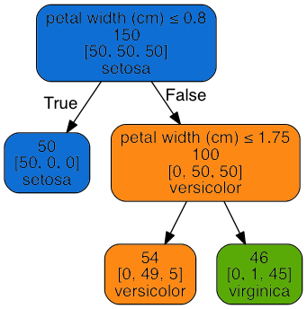

A decision tree works by sucessively splitting the data into smaller groups based on the attributes, trying to produce groups that all have the same label. So in this case, it is trying to define groups that are all the same species.
To get there, the decision tree first splits the data into two parts and classifies every data point in a given section as the category that is most common in that section.
How does it decide where to divide the data? Simple. It choses the sections in order to correctly classify as many points as possible.
In the second step, the process is repeated. For each resulting section from the first step, another optimal split is made.
Once again, every data point in a given section is classified as the category that makes up a pluraliity of the points in the section. Since each previously split section can be split again, each step in the decision tree algorithm creates more new classification sections than the previous step did.
This process continues in an iterative fashion until one of the following things happens:
A) The pre-defined maximum number of iterations (what we call the maximum tree depth) has been reached.
B) The tree's decision surace (the collection of all sections of identically classified points) has converged. This means that the groups are as narrowly divided as they can be and no further splits exist which would allow the algorithm to better classify the points.
The main advantage of a decision tree classifier is that it is one of the few classifiers where the process itself is easy to visualize. The tree itself can be constructed for an intuitive overview of each decsion at every step.
